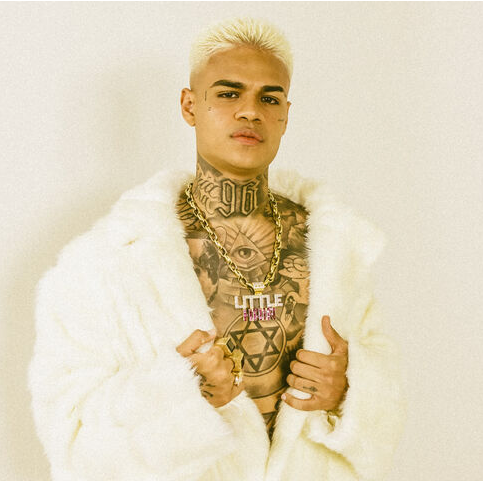
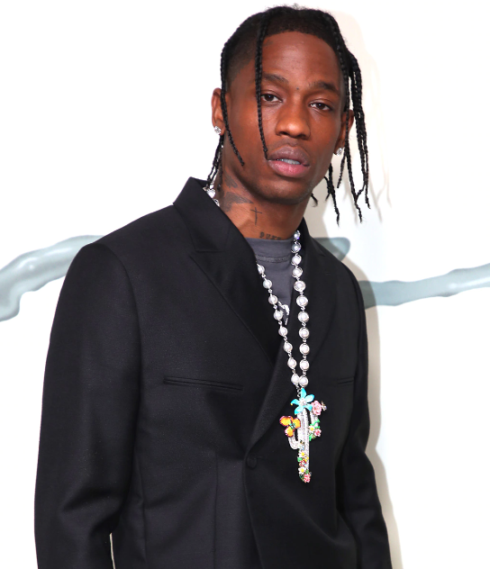
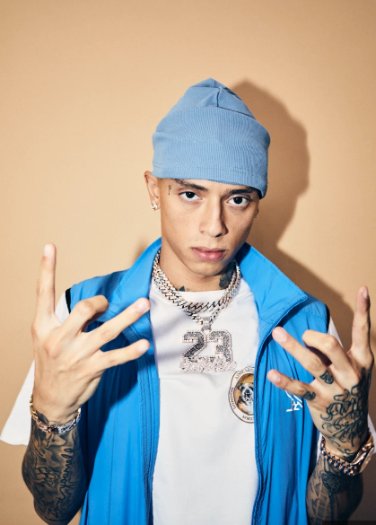
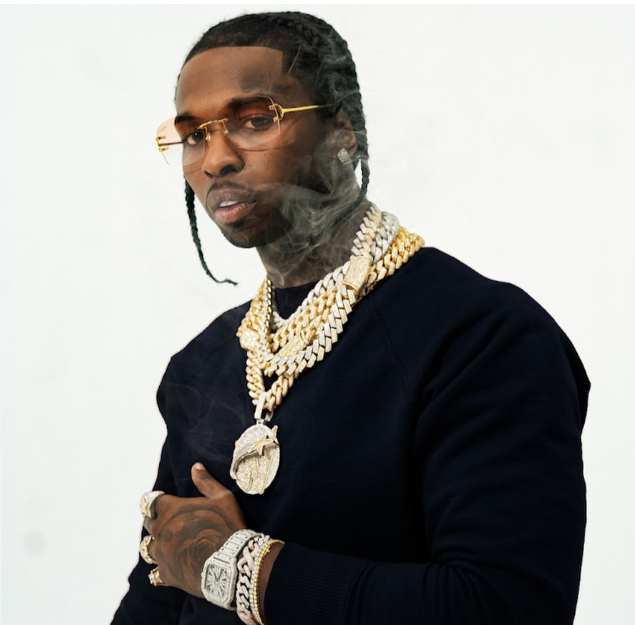

Playlist
• Trap BR
• Cantor: MC Cabelinho

Biografia: Victor Hugo Oliveira do Nascimento, mais conhecido pelo seu nome artístico MC Cabelinho, é um cantor e ator brasileiro, seu album "Little Hair" é um genero Trap BR que atualmente domina em todas plataformas digitais, com mais de 300 Milhões de visualização.
• Trap EUA
• Cantor: Travis Scott

Biografia: Jacques Berman Webster II, mais conhecido por seu nome artístico Travis Scott, é um rapper, cantor, compositor e produtor musical norte-americano. Em 2012, Scott assinou seu primeiro grande contrato com a gravadora Epic Record, fazendo diversos trabalho com outros Rapper como Kanye West e Dr Dree.
• UK Dril
• Cantor: Central Cee

Biografia: Oakley Neil H. T. Caesar-Su, conhecido profissionalmente como Central Cee, é um rapper e compositor britânico de Shepherd's Bush, Londres. Ele ganhou destaque em 2020 com o lançamento dos singles "Day in the Life" e "Loading" e suas musicas são feitas todas em Freestyle(rimas na hora) e pelo seu tom de voz.
• EUA Dril
• Cantor: Pop Smoke

Biografia: Bashar Barakah Jackson, mais conhecido pelo nome artístico Pop Smoke, foi um rapper, cantor e compositor estadunidense. Ele colaborou com o rapper Travis Scott, entre outros, mas em 19 de fevereiro de 2020 Pop Smoke foi morto por bandidos quando estava de ferias em Cedars-Sinai Medical Center, Los Angeles, Califórnia, EUA.